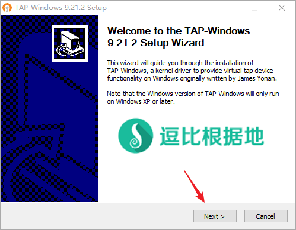
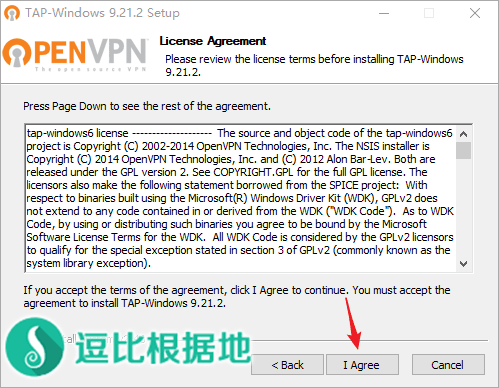
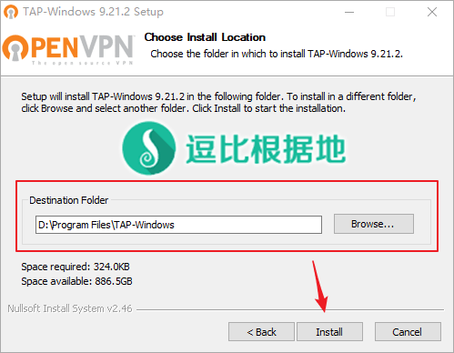
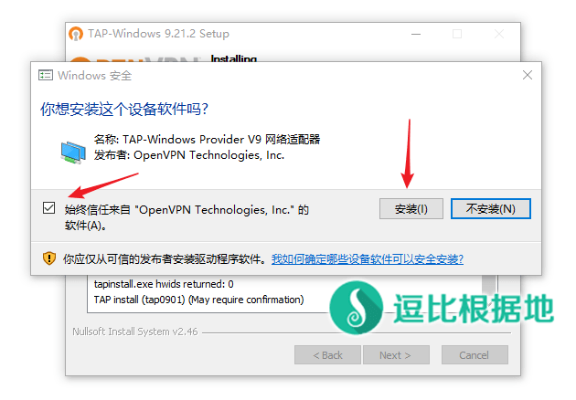
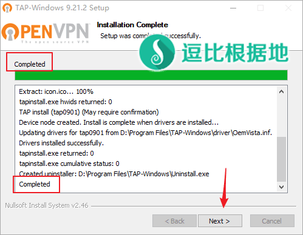
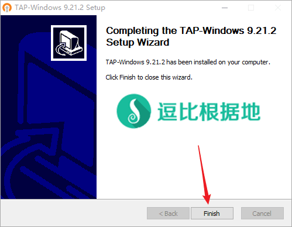

昨天发现 Brook 更新了 v20180909 版本，新增了个 VPN 模式。顾名思义，就是 Brook 客户端以VPN方式启动，让电脑的所有流量走 Brook 代理（TCP+UDP），不需要其他软件辅助。
我特地尝试了下，的确有效，并且很方便，对于需要系统全局走代理、或游戏走代理的人来说是个福音。
本文章只讲解 Windows 的使用方法。至于 linux mac 设备的，只需要把命令行启动代码里的 client 改为 vpn 即可。
注意：Brook 的VPN模式，仅仅是让所有流量都走代理（虚拟网卡），并不专门加速游戏，游戏是否加速取决于你与代理服务器之间的延迟和丢包，以及代理服务器与游戏服务器之间的延迟和丢包。
注意：VPN模式仅仅是为了让玩游戏等特殊需求的人使用，如果是正常科学上网，不推荐使用 VPN模式，一是不灵活，二是国内的软件或网站或IP也都走代理了，这意味着被墙风险增加。
更新：Brook Tools 已支持 VPN模式启动，具体请看：https://doub.io/dbrj-7/#VPN模式说明
其他 Brook 教程请看：https://doub.io/tag/brook/
前置配置
安装虚拟网卡
Windows 系统因为特殊性，所以还需要配置个虚拟网卡，不要怕麻烦，就是下载个文件 安装一下就不用管了。
点击展开 查看更多
下载
首先自然就是下载相应安装包啦。
下载地址：官方下载地址
安装
下载后得到一个 tap-windows-9.21.2.exe 文件，右键 以管理员方式运行，按照下图所示安装即可。



上图不需要勾选其他的，直接下一步(Next >)。
下图的安装位置可以自定义，默认是 C盘，我是安装在 D盘的，安装位置不影响使用。

然后就会开始安装了，安装期间会提示你添加虚拟网卡，勾选 始终信任来自 xxxx 的软件 ，并点击 安装 按钮即可。



这时候就安装完了，关掉安装程序就行了。
Brook 配置
点击展开 查看更多
下载 Brook 命令行客户端
以上步骤都做完后，剩下的就是启动 Brook 客户端了。
下载地址：Github、逗比云
Github 请选择下载 brook_windows_386.exe 或 brook_windows_amd64.exe 文件。
逗比云 请选择下载 Brook-x32-vXXXX.exe 或 Brook-x64-vXXXX.exe 文件。
下载后请把文件重命名为 brook.exe ，并继续下一步。
获取当前设备网关
经过和作者的交流，目前 Brook 客户端可以通过手动指定网关的方式来启动 VPN模式，无需在系统中勾选 UTF-8 编码模式了。
打开 CMD，执行命令：ipconfig
如下图所示，192.168.0.1 就是我当前电脑的网关。

启动 Brook 客户端
要启动 Brook 客户端，有两种方式：
一个是 CMD 进入 brook.exe 所在目录执行启动命令。
一个是在 brook.exe 所在目录下写个 bat 脚本来运行，这里我们说第二种。
注意：无论哪种方式，我们都需要以管理员方式运行 CMD程序 或 bat脚本。
注意：Brook 服务端需要更新为最新版本(客户端与服务端版本一致)，并且需要为 Brook 新版协议，即 server / servers 模式。
在 brook.exe 所在目录新建一个文本文件，并重命名为 run.bat。
我们用记事本或者其他编辑器打开 run.bat 文件，添加以下内容：
cd /d %~dp0
brook.exe vpn -l 127.0.0.1:1081 -s 1.1.1.1:7000 -p password --defaultGateway 192.168.0.1
pause>nul
记得把上面代码中的 1.1.1.1:7000 改为你的 Brook 代理 IP:端口，password 改为你的 Brook 代理账号密码，192.168.0.1 改成你的当前设备网关。
添加并修改后，保存文件。
右键 run.bat 文件 以管理员方式运行，可以看到输出如下，这代表启动成功了，快去试试其他软件是否走代理了吧！
D:\>brook.exe vpn -l 127.0.0.1:1081 -s 1.1.1.1:7000 -p password --defaultGateway 192.168.0.1
Ctrl-C to quit
如果启动后无法上网，那么请看下面的其他说明。
另外，要退出时，一定要在 CMD窗口中按下 Ctrl+C 键，然后 Brook 客户端才会重置DNS配置，直接关闭会导致DNS配置还是 127.0.0.1。
其他说明
因为我电脑上没有外服游戏，作者说是会代理 TCP+UDP流量的，大家试试吧。
更新：Brook Tools 已支持 VPN模式启动，具体请看：https://doub.io/dbrj-7/#VPN模式说明
启动提示：Can not find default gateway.
出现这个提示，说明你没有做：#修改系统区域设置 这个步骤。
启动提示：No more data is available.
出现这个提示，说明你没有做：#安装虚拟网卡 这个步骤。
启动后无法上网，可能的原因 一
客户端与服务端版本不一致
启动后无法上网，可能的原因 二
客户端与服务端的设备系统时间相差过大。
点击展开 查看更多
当服务器与本地设备系统时间相差过大，会导致客户端无法与服务端建立链接。
请修改服务器时区，或者手动修改服务器系统时间（注意也要校准自己本地设备时间）！
\cp -f /usr/share/zoneinfo/Asia/Shanghai /etc/localtime
# 修改时区为北京时区(上海)
# 如果修改时区后时间还是不准确，那么尝试手动修改系统时间：
date -s "2017-11-02 19:14:00"
# 修改系统时间为 2017年11月02日 晚上19点14分00秒
date "+%Y-%m-%d %H:%M:%S %u %Z"
# 查看服务器当前时间
启动后无法上网，可能的原因 三
Windows 防火墙阻挡代理。
点击展开 查看更多
目前发现 Windows 防火墙会阻挡代理软件对外建立的链接，所以需要关闭 Windows 自带的防火墙。
关闭步骤：
控制面板 =>
中上部搜索框搜索[Windows Defender 防火墙] =>
点击左侧的 启动或关闭 Windows Defender 防火墙 选项 =>
选择 专用网络设置 / 共用网络设置 - 关闭 Windows Defender 防火墙，然后点击确定按钮即可。
转载请超链接注明：逗比根据地 » 新版本 Brook VPN 模式尝鲜 —— Windows 手动使用教程
责任声明：本站一切资源仅用作交流学习，请勿用作商业或违法行为！如造成任何后果，本站概不负责！


其次我还需要知道你的完整操作过程。
VPN不适合翻墙，特征明显。而SS的加密方式已经足够安全了。你是在传输国家机密文件吗？你觉得你的信息值得国家用超级计算机费劲强行破解？
墙只是根据各种特征来判断你的链接是不是代理连接，如果是的话就直接TCP封禁IP了，墙可没有功夫一个个破解数据看你们在干嘛，就算GFW的算力翻一百倍，也不能实时破解所有加密流量来判断是不是代理链接。
知道密码也无法知道你当前链接传输的内容。
虽然密码是固定的，但是每次连接都不一样，客户端都要与服务端进行握手交换随机密匙。
知道密码他们可以链接代理账号，但是他们不能用这个密码破解已创建的链接。
否则谁还用免费账号？谁还做免费账号？代理软件作者难道不知道？
一键脚本是无法完全发挥V2ray的特点的，只能死板的用配置文件模板方式套用。
写脚本太麻烦，而且我看别人也写好了脚本，我就不重复造轮子了。
你的账号PC能用，说明账号没问题。
你的手机客户端能链接我的免费账号，说明手机客户端或手机环境没问题。
你的PC和手机都是同一个网络下吗？
手机试过移动数据网络吗？
不过排除法在你这里不管用，有矛盾，这就很迷了。。。
而 Brook Tools 的 全局模式仅仅是系统代理模式全局代理（只有会读取系统代理设置的软件才会受影响，例如浏览器，或者其他软件内置的浏览器）
另外 Brook Tools 已支持 VPN模式。
手动操作，退出一定要在 CMD窗口中按下 Ctrl+C 键，然后 Brook 客户端才会重置DNS配置，直接关闭会导致DNS配置还是 127.0.0.1。
你现在的问题具体是什么？
详细请 Telegram群组(TG使用教程)私聊联系我讨论解决。
没有反应是什么意思？无法访问谷歌吗？访问 ipip.net 能看到IP是你的代理服务器IP吗？